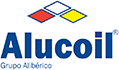
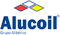

Многолетний опыт работы со сложнейшими проблемами позволяет нам оперативно предлагать наиболее действенные, подходящие и эффективные решения.
Мы инвестируем вновейшее оборудование и инновационные технологии по использованию крупнейшего источника энергии – солнца. Любое здание мы можем сделать эффективным и экологически чистым, к тому же оно станет более независимым от энергетического рынка и внесёт значительный вклад в защиту окружающей среды и климата.
Мы ищем новыениши и осуществляем проекты не только в Литве, но и в других странах: Нор вегии, Швеции, Исландии, России, Белоруссии и Казахстане. Вовремя принятые стратегичес кие решения дают нам больше уверенности, возможностей для достижения своих целей - быть надёжным и верным партнером для наших Клиентов.
АРХАТ-инжиниринг собрал молодой и амбициозный коллектив, своими знаниями,опытом и компетенцией завоевавший доверие и уважение клиентов. За время своей деятельности мы осуществили множество проектов, успешно стремимся к достижению целей, справляемся с возникающими трудностями.
Стеклянные конструкции благодаря своему уникальному свойству сочетают в себе легкость и прозрачность, прочность и безопасность, это делает стеклянные конструкции самым привлекательным элементом в любом строительстве так как они облегчают само здание и интерьер внутри его делая его воздушным и светлым. При грамотном подходе стеклянные конструкции дают эффект при котором переход из внешнего мира в здание практически незаметен и вы ощущаете себе достаточно комфортно.
Стеклянные конструкции сегодня все шире завоевывает строительный рынок и становится элементом дизайна современного стиля не только зданий в которых расположены торговые центры, отели, вокзалы, аэропорты, кафе, но и стали частью внутренних интерьеров квартир и коттеджей.
Стеклянные конструкции также дают огромное поле действия для дизайнеров, которые могут воплотить свои идеи в металл и стекло. Стеклянные конструкции достаточно прочные что достигается за счет использования металла и закаленного стекла которое в свою очередь очень тяжело разбить а при разрушении не представляет опасности так как разрушается на мелкие фрагменты. Стеклянные конструкции в настоящий момент начали применяется все шире --- так они начали применятся в уличной архитектуре, в качестве стеклянных ограждений мостов, ограждения обрывов, киосков, частичной остеклении мостовой чтоб показать археологические раскопки.
При использовании прозрачного стекла дневной свет проникает через него точно так же, как если бы стеклянной перегородки не было. Можно назвать это возведением “невидимых стен”- защита от шума как у гипсокартонной перегородки, однако вы видите все, что происходит за “стеной”. Это очень удобно, например, в офисных учреждениях, где требуется построить психологически уютную атмосферу каждому сотруднику, не отгораживая его от остальных коллег и не теряя командного духа.
В качестве облицовки могут применяться различные материалы:
- Керамогранитные плиты. Как правило, для этого используются различные форматы керамогранитной плиты размером от 300 до 1800 мм и обширной цветовой гаммы. Возможна методика открытого крепления на кляймерах и скрытого крепления цанги либо химический крепеж. Особое преимущество данной системы: презентабельность и уникальная долговечность.
- Стеклянные панели Pilkington. Они долговечны - срок их службы практически не ограничен, они абсолютно негорючи, ударостойки, влагонепроницаемы, их плотность составляет 25 кг/м2 (при толщине 10 мм), максимальный размер такой панели может составлять 2,1х4,2 м., цвет изделий определяется согласно европейской шкале RAL, эти панели экологичны - их применение совершенно безвредно для человека. Современный навесной вентилируемый фасад имеет длительный безремонтный срок службы от 25 лет. Помимо эксплуатационных качеств системы, несомненно, следует упомянуть преимуществах возведения такого фасада. Подоблицовочная система состоит из кронштейнов и вертикальных направляющих. Длина кронштейнов регулируется, что позволяет скрывать неровности уже построенных зданий (до 200 мм).
- Композитные алюминиевые панели типа «Alucobond» позволяет придать зданию прекрасный вид и претворить в жизнь самые смелые и неожиданные проекты архитекторов, благодаря широкой палитре цветов отделочного материала и неограниченного формообразования фасадов. Монтаж вентилируемого фасада из алюкобонда обеспечивает зданию превосходную теплоизоляцию, шумоизоляцию, придает зданию высокие архитектурные характеристики.
Роллетные системы (роллеты) устанавливаются на дверные или оконные проемы и обеспечивают надежную защиту помещения от посторонних глаз, шума, погодных условий и взлома. Роллетная решетка представляет собой роллетную систему сворачивающихся профилей, которые создают поднимающуюся и опускающуюся решетку. Фактически это роллета с рядом отверстий привлекательной формы, которые позволяют витрине полностью просматриваться и в то же время защищают товар от хищений, а помещения - от проникновения злоумышленников. Роллетные решетки - идеальное решение для: магазинов и бутиков; торговых центров и павильонов; офисов и банков; кафе и ресторанов; подземных гаражей и паркингов.
Роллетное полотно может состоять из пенозаполненных или экструдированных (повышенной жесткости) профилей. Текущий ассортимент включает 7 видов профилей роликовой прокатки (типоразмерный ряд от 36мм до 55мм) и 3 вида экструдированных профиля (42мм, 44мм, 55мм). Экструдированные направляющие шины обеспечивают движение роллетного полотна при намотке его в короб. В зависимости от требований, предъявляемых к архитектурным особенностям здания, а также степени его защиты, при монтаже могут использоваться стандартные, усиленные или специализированные направляющие шины. Защитные короба и боковые крышки подбираются в зависимости от внешнего экстерьера помещения (45-, 20-градусные, круглые или полукруглые) и требований к жесткости конструкции (роллфирминговые или экструдированные). Элементы управления роллетой подбираются исходя из размера и веса роллеты (рольставни), а также удобства управления. Могут быть ручные или автоматизированные.
Стоит также отметить, что собственное производство позволяет нам контролировать качество изготавливаемых изделий на всех этапах производства. И как результат, вы получаете высококачественный продукт, легкий в управлении и надежный в эксплуатации.
Компания “АРХАТ-инжиниринг” оказывает услуги по аренде подъемной техники строительным и производственным компаниям, представителям малого бизнеса, а также частным заказчикам. Все оборудование находится в отличном техническом состоянии.
Аренда строительных подъемных платформ и других подъемных устройств позволяет избежать лишних трат (выплата зарплаты операторам и техникам, расходы на содержание), а также выручает в авральных ситуациях, когда собственных мощностей компании недостаточно для решения текущих задач.
Вы можете арендовать: люльки строительные (фасадные), мачтовые подъемники, коленчатые подъемники, консольные краны.
ПодробнееКомпания “АРХАТ-инжиниринг” оказывает услуги по аренде подъемной техники строительным и производственным компаниям, представителям малого бизнеса, а также частным заказчикам. Все оборудование находится в отличном техническом состоянии.
Аренда строительных подъемных платформ и других подъемных устройств позволяет избежать лишних трат (выплата зарплаты операторам и техникам, расходы на содержание), а также выручает в авральных ситуациях, когда собственных мощностей компании недостаточно для решения текущих задач.
Вы можете арендовать: люльки строительные (фасадные), мачтовые подъемники, коленчатые подъемники, консольные краны.
ПодробнееКомпания “АРХАТ-инжиниринг” оказывает услуги по аренде подъемной техники строительным и производственным компаниям, представителям малого бизнеса, а также частным заказчикам. Все оборудование находится в отличном техническом состоянии.
Аренда строительных подъемных платформ и других подъемных устройств позволяет избежать лишних трат (выплата зарплаты операторам и техникам, расходы на содержание), а также выручает в авральных ситуациях, когда собственных мощностей компании недостаточно для решения текущих задач.
Вы можете арендовать: люльки строительные (фасадные), мачтовые подъемники, коленчатые подъемники, консольные краны.
Подробнее«Славянский квартал» расположен на пересечении проспекта Машерова и проспекта Победителей — центральных столичных магистралей, в непосредственной близости с любимым место отдыха многих минчан - парком Победы, раскинувшимся на площади вокруг набережной Свислочи и Комсомольского озера. Рядом - исторический центр — Троицкое предместье и Верхний город. Как ни в каком другом месте белорусской столицы, здесь витает дух давних времен, сохранился неповторимый исторический и местный колорит. Респектабельность района, его близость к историческому центру, уникальная для мегаполиса экология и великолепные природные ландшафты делают «Славянский квартал» самым перспективным вариантом из строящихся сегодня объектов коммерческой недвижимости и неординарного жилья высокой комфортабельности.
«Славянский квартал» расположен на пересечении проспекта Машерова и проспекта Победителей — центральных столичных магистралей, в непосредственной близости с любимым место отдыха многих минчан - парком Победы, раскинувшимся на площади вокруг набережной Свислочи и Комсомольского озера. Рядом - исторический центр — Троицкое предместье и Верхний город. Как ни в каком другом месте белорусской столицы, здесь витает дух давних времен, сохранился неповторимый исторический и местный колорит. Респектабельность района, его близость к историческому центру, уникальная для мегаполиса экология и великолепные природные ландшафты делают «Славянский квартал» самым перспективным вариантом из строящихся сегодня объектов коммерческой недвижимости и неординарного жилья высокой комфортабельности.
«Славянский квартал» расположен на пересечении проспекта Машерова и проспекта Победителей — центральных столичных магистралей, в непосредственной близости с любимым место отдыха многих минчан - парком Победы, раскинувшимся на площади вокруг набережной Свислочи и Комсомольского озера. Рядом - исторический центр — Троицкое предместье и Верхний город. Как ни в каком другом месте белорусской столицы, здесь витает дух давних времен, сохранился неповторимый исторический и местный колорит. Респектабельность района, его близость к историческому центру, уникальная для мегаполиса экология и великолепные природные ландшафты делают «Славянский квартал» самым перспективным вариантом из строящихся сегодня объектов коммерческой недвижимости и неординарного жилья высокой комфортабельности.
 
Многолетний опыт работы со сложнейшими проблемами позволяет нам оперативно предлагать наиболее действенные, подходящие и эффективные решения.
Мы инвестируем вновейшее оборудование и инновационные технологии по использованию крупнейшего источника энергии – солнца. Любое здание мы можем сделать эффективным и экологически чистым, к тому же оно станет более независимым от энергетического рынка и внесёт значительный вклад в защиту окружающей среды и климата.
Мы ищем новыениши и осуществляем проекты не только в Литве, но и в других странах: Норвегии, Швеции, Исландии, России, Белоруссии и Казахстане. Вовремя принятые стратегические решения дают нам больше уверенности, возможностей для достижения своих целей - быть надёжным и верным партнером для наших Клиентов.
АРХАТ-инжиниринг собрал молодой и амбициозный коллектив, своими знаниями,опытом и компетенцией завоевавший доверие и уважение клиентов. За время своей деятельности мы осуществили множество проектов, успешно стремимся к достижению целей, справляемся с возникающими трудностями.
- ЮРИДИЧЕСКИЙ И ПОЧТОВЫЙ АДРЕС:220131, Республика Беларусь, г. Минск, ул.Гамарника, 16А, оф.146
- РЕКВИЗИТЫ КОМПАНИИ:р/с 3012302080013 в ЗАО “МТБанк” ЦБУ «Парус» Мележа, 1, код 117 УНН 192310618
- ТЕЛЕФОНЫ ДЛЯ СВЯЗИ:8 (017) 261-32-67; 8 (017) 261-41-57
- EmailMARKETING@ARHAT-I.BY